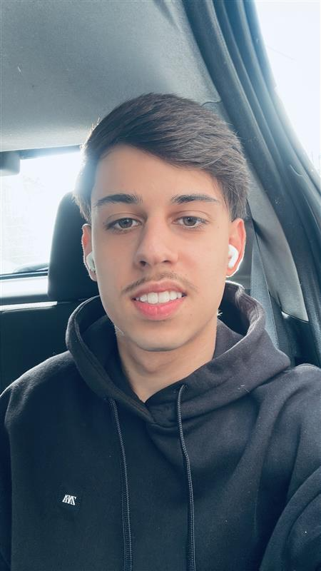
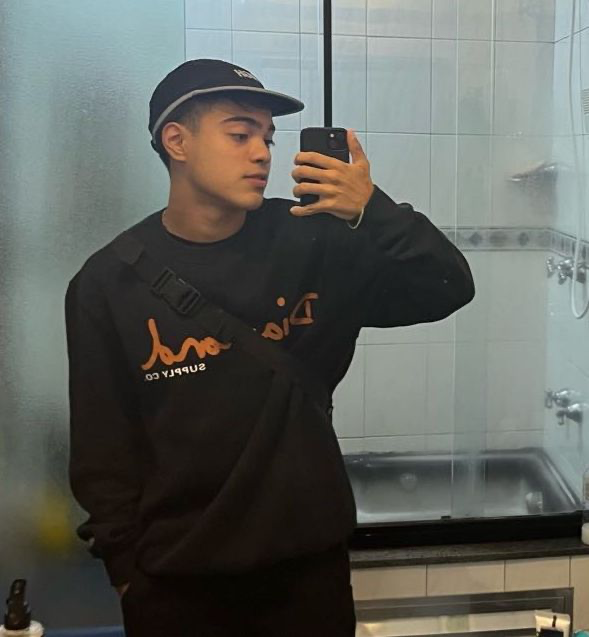

Quem Somos
Somos um grupo de estudantes apaixonados por tecnologia, design e impacto social. Nosso propósito é desenvolver projetos que transformem ideias em ferramentas reais de mudança, inspirando o mesmo espírito solidário da Turma do Bem.
Nosso Time

Luis Fillipe Seripieri Rm567918

Luiz Felipe Kichimoto Rm567726
Gabriel Rocha - Rm567023
Nossa Missão
Unir propósito e tecnologia para criar soluções que gerem impacto positivo, transformando a vida das pessoas e inspirando novas conexões humanas.